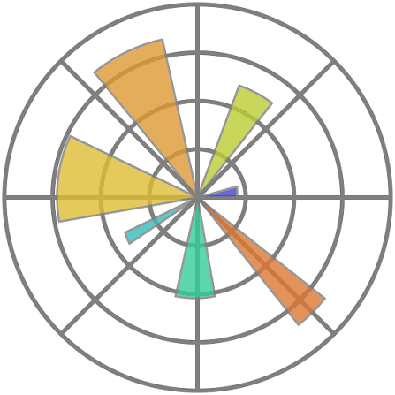
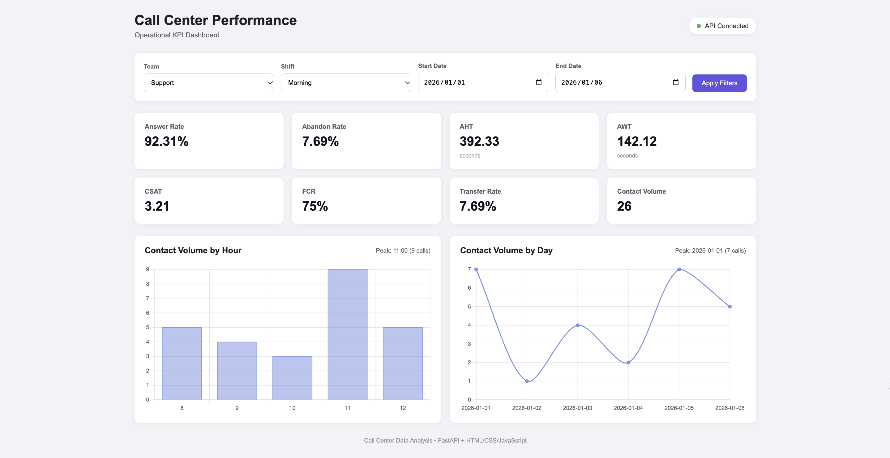
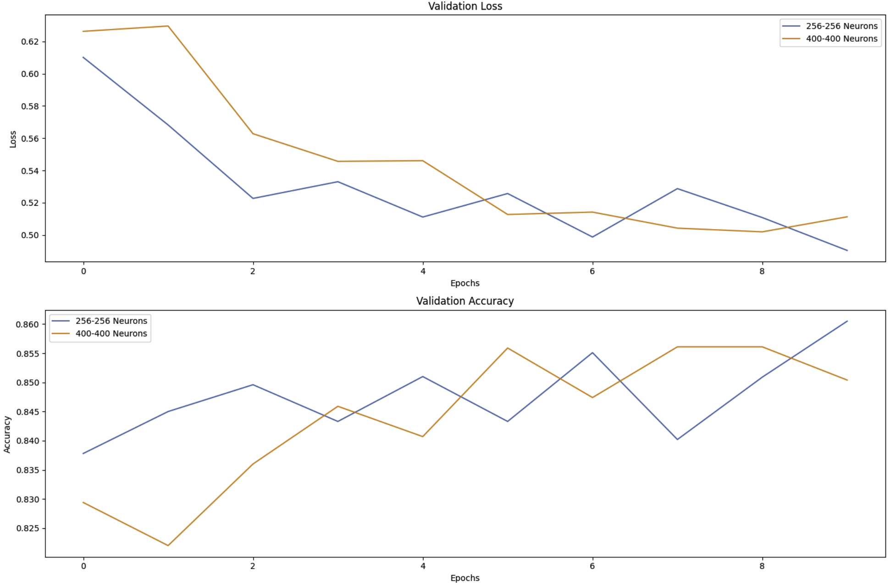
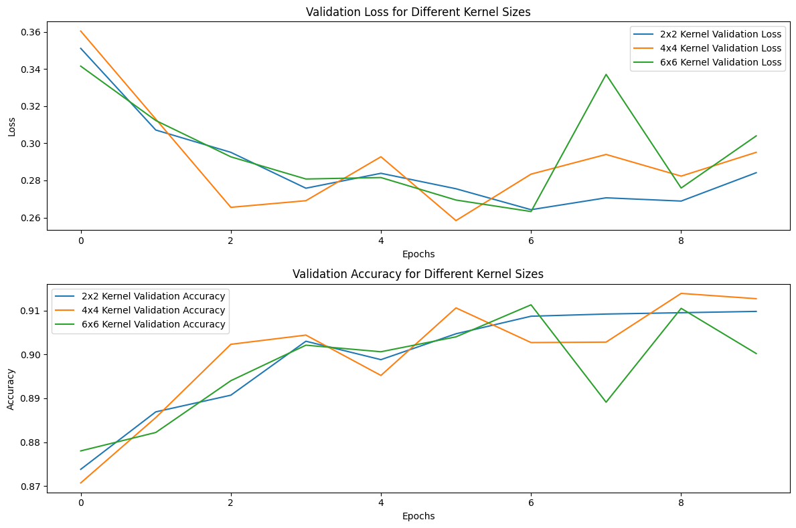
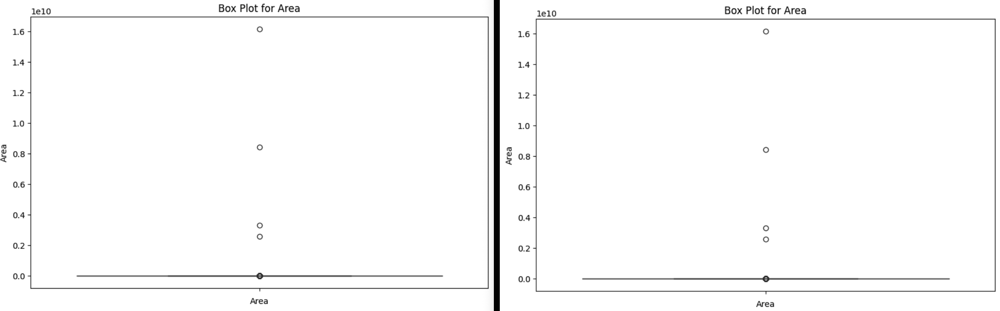
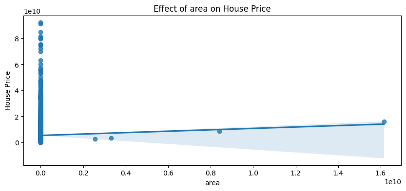

Personal Portfolio
Fatemeh Ghorbani
Computer Science graduate with professional software development experience and hands-on experience in data analysis, analytics tracking, and machine learning. Currently pursuing an M.Sc. in Computer Engineering at the University of Tehran, specializing in Engineering Education.
About Me
My background combines computer science, software development, and academic projects in data analysis and machine learning. I enjoy exploring data, solving practical problems, and turning findings into meaningful insights. I am particularly interested in applying analytical and technical skills to real-world challenges while continuing to grow in the fields of data and technology.
Technical Skills
 Python
SQL
Python
SQL
 Pandas
Pandas
 NumPy
Excel
Power BI
Data Analysis
Data Visualization
Machine Learning
NumPy
Excel
Power BI
Data Analysis
Data Visualization
Machine Learning
 Scikit-learn
Scikit-learn

Matplotlib Seaborn Math GitSelected Projects
Discovering Smuggling Ports and Unconventional POIs Using Machine Learning
Project Overview
This bachelor's thesis explores the use of unsupervised machine learning to identify unusual vessel activity and discover unconventional Points of Interest (POIs) using Automatic Identification System (AIS) data. The goal was to identify geographic patterns that may warrant further investigation, rather than to confirm illegal activities.
Dataset and Study Area
The project used AIS vessel tracking data obtained from the U.S. MarineCadastre database. The analyzed records covered the period from December 31, 2020, to March 28, 2021, within a selected area of the Pacific Ocean.
- Initial dataset: 385,560 records
- After initial filtering: 304,988 records
- After handling missing values and preparing selected attributes: 304,788 records across 18 columns
- After outlier removal: 142,649 records across 18 columns
Data Preprocessing
Data preprocessing included removing unnecessary identifying attributes, handling missing values, creating indicators for missing data, and detecting statistical and logical outliers. These steps prepared the vessel tracking data for spatial analysis and clustering.
Methodology
The project applied HDBSCAN, a density-based unsupervised clustering algorithm, to vessel positions. The analysis focused on records with a Speed Over Ground (SOG) below 5 knots. Latitude and longitude coordinates were standardized before clustering, with a minimum cluster size of 10.
The algorithm grouped spatially dense observations and labeled points that did not fit any cluster as noise. These noise points were examined as potential unconventional POIs for further investigation.
Visualizations
Interactive geographic visualizations were created to explore the spatial distribution of vessel observations, detected clusters, and noise points. A heatmap was also generated to visualize the geographic distribution of clustered observations.


Tools and Technologies
Python, Pandas, NumPy, Matplotlib, Seaborn, Scikit-learn, HDBSCAN, Folium
Key Takeaway
This project demonstrates how unsupervised machine learning and geospatial visualization can support the exploration of unusual vessel activity in AIS data. The detected patterns are exploratory findings and do not, on their own, establish smuggling or other illegal activity.
Call Center Performance Analysis and Interactive KPI Dashboard
Project Overview
This project focuses on analyzing call center performance using operational and customer experience data. The goal was to identify service bottlenecks, evaluate key performance indicators (KPIs), and turn raw call records into actionable insights for operational improvement.
Beyond data analysis, I developed an interactive dashboard connected to a FastAPI backend, allowing users to explore performance metrics by team, shift, and date range.
Problem and Analytical Approach
Overall performance metrics do not always reveal where service problems occur or what may contribute to them. Long waiting times, abandoned calls, extended handling durations, and call transfers require deeper investigation across teams and call categories.
I first validated and cleaned the data, then calculated call center KPIs and compared results across teams, call reasons, and agents. I used these comparisons to identify areas requiring further investigation and formulate practical recommendations.
Dataset and Data Cleaning
- Initial dataset: 968 records and 16 columns
- Final cleaned dataset: 964 records and 20 columns
- Identified and handled 2 records with negative handling durations
- Investigated duplicate Call IDs and removed an inconsistent duplicate
- Created derived variables for cleaned handling time, call hour, and shift
Additional validation covered missing values, date and time formats, and logical consistency between call status and handling time. Missing values were retained when reliable replacement values could not be inferred.
Interactive Dashboard
I built an interactive dashboard using HTML, CSS, and JavaScript,
with a FastAPI backend providing filtered KPI results through the
/kpis endpoint.

Dashboard Snapshot: Support — Morning Shift
For the selected period of January 1–6, 2026, the dashboard displayed 26 contacts, an Answer Rate of 92.31%, and an Abandon Rate of 7.69%. Average Handle Time was 392.33 seconds, while Average Wait Time was 142.12 seconds. The average CSAT score was 3.21, FCR was 75%, and Transfer Rate was 7.69%.
Contact volume peaked at 11:00, with 9 calls, while January 1 had the highest daily volume, with 7 calls. These results describe the selected team, shift, and date range and should not be interpreted as overall call center performance.
Dashboard Features
- KPI monitoring: Answer Rate, Abandon Rate, Average Handle Time (AHT), Average Wait Time (AWT), CSAT, FCR, Transfer Rate, and Contact Volume.
- Interactive filters: Filter results by team, shift, and date range.
- Hourly analysis: Explore contact volume by hour and identify peak hours.
- Daily analysis: Compare contact volume by day and identify peak days.
- API integration: Retrieve filtered KPI results from the FastAPI backend.
Key Findings
- Support queue: In the overall team-level analysis, Support had an Answer Rate of 82.66%, an Abandon Rate of 17.34%, an AWT of 142.5 seconds, an AHT of 406.21 seconds, and an average CSAT score of 3.18.
- Handling time: Support had a higher AHT than the other teams across the analyzed call-reason categories, suggesting that call mix alone did not explain the difference.
- Transfers: Transferred calls had an average handling time of 350.87 seconds, compared with 301.12 seconds for other calls. This association warrants further investigation into routing and knowledge-base coverage.
- Agent-level variation: Agent A07 had an average handling time of 526.62 seconds across 29 calls, highlighting a case for further review in context.
Business Recommendations
The findings suggest reviewing Support staffing capacity and handling workflows, investigating the reasons for longer handling times across call categories, and examining routing processes for call reasons with high transfer rates. Agent-level comparisons should account for workload and call complexity before drawing conclusions about individual performance.
Tools and Technologies
Python, Pandas, NumPy, Jupyter Notebook, HTML, CSS, JavaScript, FastAPI, descriptive statistics, data cleaning, feature engineering, KPI analysis
Key Takeaway
This project demonstrates an end-to-end data analytics workflow, from data validation and KPI calculation to operational analysis, business recommendations, and dashboard development. It combines analytical thinking with backend development to make performance metrics accessible and useful for decision-making.
Diabetes Prediction Using Artificial Neural Network
Project Overview
This project explores the use of an Artificial Neural Network (ANN) to predict diabetes outcomes from health-related features using the Pima Indians Diabetes Dataset. The goal was to build a binary classification pipeline, address data quality issues, train a neural network, and evaluate its performance on unseen data.
Problem Statement and Analytical Approach
The main challenge was to build a reliable classification model from a relatively small healthcare dataset containing potentially invalid zero values and an unequal distribution of target classes. Rather than training a model directly on the raw data, I first addressed data quality, prepared the input features, and designed a training and evaluation workflow.
My approach combined median imputation, feature standardization, class-weighted neural network training, and evaluation using multiple classification metrics. The objective was to assess not only overall predictive accuracy, but also how effectively the model identified positive cases.
Dataset
- Dataset: Pima Indians Diabetes Dataset
- Original size: 768 records and 9 columns
- Input features: 8 health-related variables
- Target variable:
Outcome - Class 0: Negative diabetes outcome
- Class 1: Positive diabetes outcome
Data Preprocessing
- Identified zero values treated as invalid in Glucose, BloodPressure, SkinThickness, Insulin, and BMI.
- Replaced those values with missing values and applied median imputation.
- Split the dataset into training, validation, and test sets using stratified sampling: 70%, 15%, and 15%.
-
Standardized the input features using
StandardScaler, fitted on the training set.
Model Architecture and Training
I implemented a feed-forward Artificial Neural Network using TensorFlow/Keras. The network contains two hidden Dense layers with 32 and 16 units, ReLU activations, a Dropout layer, and a sigmoid output for binary classification.
- Optimizer: Adam with an initial learning rate of 0.001
- Loss function: Binary Cross-Entropy
- Regularization: Dropout with a rate of 0.2
- Class balancing: Computed class weights
- Training controls: Early Stopping and ReduceLROnPlateau
- Maximum training epochs: 200, with callbacks monitoring validation performance
- Batch size: 32
- Classification threshold: 0.5
Model Evaluation
The final model was evaluated on a held-out test set of 116 records. Multiple metrics were used to examine overall performance, positive-class identification, and the model's ability to distinguish between the two classes.
The confusion matrix shows 64 correctly classified negative cases and 28 correctly classified positive cases. The model also produced 11 false positives and 13 false negatives on the test set.
Training and Evaluation Visualizations
Training and validation curves were used to inspect learning behavior and potential overfitting. The ROC curve and confusion matrix provide additional views of the model's classification performance.

Key Takeaway
This project demonstrates an end-to-end machine learning workflow, including data quality checks, preprocessing, neural network design, class weighting, training control, and multi-metric evaluation. The test results achieved 79.31% accuracy and a ROC-AUC of 0.8615, while the positive-class recall of 68.29% highlights an opportunity for further improvement.
This is an educational machine learning project, not a clinically validated diagnostic system. Its predictions should not be used for medical decision-making.
Tools and Technologies
Python, NumPy, Pandas, Scikit-learn, TensorFlow, Keras, Matplotlib, Joblib
Fashion-MNIST Image Classification with MLP and CNN
Project Overview
This project investigates neural network architectures and training configurations for classifying grayscale images of clothing items. Rather than relying on a single model, I conducted a series of experiments to examine how network architecture, hidden-layer size, regularization, optimization algorithms, and convolution kernel sizes affect classification performance.
Problem and Approach
The main challenge was to understand how different model design choices influence learning behavior and generalization. I started with a baseline Multi-Layer Perceptron (MLP), then systematically compared alternative configurations and explored a Convolutional Neural Network (CNN) for image classification.
Training and validation accuracy and loss were tracked across experiments to compare model behavior and investigate potential overfitting.
Dataset
- Dataset: Fashion-MNIST
- Total images: 70,000 grayscale images
- Training set: 60,000 images
- Test set: 10,000 images
- Image dimensions: 28 × 28 pixels
- Number of classes: 10 clothing categories
- Data source: TensorFlow/Keras
Data Preprocessing
- Normalized pixel values from the range [0, 255] to [0, 1].
- Converted class labels to one-hot encoded vectors.
- Flattened images for MLP models and reshaped images to 28 × 28 × 1 for CNN training.
Experiments
1. Baseline MLP
Built a baseline network with a Flatten layer, one hidden Dense layer containing 128 neurons with ReLU activation, and a 10-neuron Softmax output layer.
2. Hidden-Layer Size and Architecture
Compared MLP models with 100, 200, 300, and 400 hidden neurons. Further experiments examined seven two-hidden-layer configurations: (256, 128), (128, 256), (256, 256), (128, 128), (300, 300), (400, 300), and (400, 400).
3. Overfitting and Regularization
Investigated L2 regularization and Dropout using two-hidden-layer architectures (256, 256) and (400, 400), with an L2 coefficient of 0.001 and a Dropout rate of 0.2.
4. Optimization Algorithms
Compared SGD, RMSprop, and Adam using the same baseline MLP architecture to investigate differences in validation loss and accuracy.
5. Convolutional Neural Network (CNN)
Built a CNN with 32 convolutional filters, MaxPooling, a 64-neuron Dense layer, and a 10-class Softmax output. Compared convolution kernel sizes of 2 × 2, 4 × 4, and 6 × 6.
Training Setup
- Epochs per experiment: 10
- Batch size: 32
- MLP and CNN optimizer: Adam, except in the optimizer comparison
- Loss function: Categorical Cross-Entropy
- Activation functions: ReLU and Softmax
Experimental Results
Validation accuracy and loss curves were plotted to compare model configurations. These visualizations help assess learning behavior and reveal how architectural and training choices affect validation performance.


Key Takeaway
This project demonstrates an experimental approach to deep learning, covering baseline modeling, architecture comparison, regularization, optimizer selection, and convolutional feature extraction. It emphasizes evaluating model configurations using validation curves rather than assuming that a larger or more complex network will always perform better.
Tools and Technologies
Python, TensorFlow, Keras, Matplotlib, NumPy
Apartment Rental Database Management System
Project Overview
This project focuses on designing and implementing a relational database for managing apartment rentals. It organizes information about tenants, landlords, apartments, individual units, rental contracts, payments, and household members.
Problem Statement
Apartment rental management involves multiple interconnected entities. Without a structured database, maintaining consistent records and retrieving information about tenants, properties, contracts, and payments can become difficult. The goal of this project was to organize these records and establish relationships between them using a relational database schema.
Database Design
The database was designed around seven related tables, using primary keys to identify records and foreign keys to define relationships between entities.
- Tenant: Tenant identification and contact information.
- Landlord: Property owner information.
- Apartment: Property addresses, unit counts, and landlord relationships.
- Unit: Individual units and floor information.
- Contract: Rental periods, tenants, units, and rent information.
- Payment: Payment amounts, dates, tenants, and apartments.
- Member: Household members associated with tenants.
SQL Implementation
SQL was used to create tables, define primary and foreign key constraints, insert sample data, and retrieve records from related tables. JOIN operations were used to combine information across the Tenant, Contract, and Apartment tables.
Example Query
A sample query retrieves tenant full names and apartment addresses for a selected apartment ID. It combines tenant, contract, and apartment records using JOIN operations, demonstrating how relational data can be queried across multiple tables.
Tools and Technologies
SQL, Relational Database Design, Primary Keys, Foreign Keys, JOIN
Key Takeaway
This project provided practical experience in relational database design, defining relationships between entities, maintaining referential integrity, and writing SQL queries to retrieve information from interconnected tables.
House Price Analysis and Prediction Using Linear Regression
Project Overview
This project explores a housing dataset to understand the factors associated with property prices and build a baseline price prediction model using Linear Regression. The workflow includes exploratory data analysis, data cleaning, missing-value imputation, outlier detection, feature scaling, and model evaluation.
Problem Statement
Housing datasets may contain missing values, extreme observations, and a mixture of numerical, categorical, and binary features. These issues can affect data analysis and predictive modeling. The goal was to examine the dataset, prepare it for analysis, investigate relationships between property characteristics and price, and establish a regression modeling workflow.
Dataset
The project uses a housing dataset containing 3,479 records and 8 columns. The data includes property area, number of rooms, parking, warehouse, elevator, address, price, and price in USD.
- Initial records: 3,479
- Initial features: 8
- Missing Area values: 9
- Missing Address values: 23
- Target variable: Price
Exploratory Data Analysis
Histograms and box plots were used to inspect the distributions of area and price and identify potentially unusual observations. Count plots and pie charts explored property characteristics, including rooms, parking, warehouses, and elevators. Regression plots were also used to examine the relationships between price and selected features.


Data Preprocessing
The preprocessing workflow included removing records with missing addresses, encoding the address feature using LabelEncoder, imputing missing values with KNNImputer, and detecting potential outliers using the Z-score method with a threshold of 3. StandardScaler was also applied to explore feature normalization.
The dataset initially contained 23 missing Address values and 9 missing Area values. Removing records with missing addresses left 3,456 records before Area imputation.
Modeling Approach
A Linear Regression model was trained to predict property prices. The data was split into training and testing sets using an 80/20 split, with random_state set to 42. The model used property features as input and Price as the target.
Model performance was evaluated using Mean Squared Error (MSE), Root Mean Squared Error (RMSE), Mean Absolute Error (MAE), Mean Squared Logarithmic Error (MSLE), and the R-squared score.
Initial Evaluation Results
- R-squared: approximately 1.00
- RMSE: 79.37
- MAE: 64.41
- MSE: 6,299.04
Important limitation: Price(USD) appears to be directly derived from Price and was retained as an input feature. Since the target Price can therefore be reconstructed from this feature, the near-perfect R-squared score is affected by target leakage. These initial metrics should not be interpreted as evidence of reliable real-world price prediction. A revised evaluation should exclude Price(USD) from the input features.
Tools and Technologies
Python, Pandas, NumPy, Matplotlib, Seaborn, SciPy, Scikit-learn
Key Takeaway
This project demonstrates an end-to-end introductory regression workflow, from exploratory data analysis and data preparation to model training and evaluation. It also highlights the importance of identifying target leakage before interpreting predictive performance.
Rice Grain Classification Using K-Nearest Neighbors (KNN)
Project Overview
This project implements a K-Nearest Neighbors (KNN) classifier to identify rice varieties based on their geometric characteristics. The model predicts whether a rice grain belongs to the Cammeo or Osmancik class using seven numerical features.
Dataset and Features
The project uses the Rice Cammeo and Osmancik dataset. The input features describe the size and shape of rice grains:
- Area and Perimeter
- Major and Minor Axis Length
- Eccentricity
- Convex Area
- Extent
Data Preprocessing
- Removed missing values and duplicate records.
- Filtered out rows containing invalid "???" values.
- Converted selected features to numeric data types.
- Standardized the features using their mean and standard deviation.
Classification Method
The KNN algorithm was implemented manually using Euclidean distance. The program standardizes the user's input, calculates its distance from the dataset samples, selects the k nearest neighbors, and predicts the class by majority vote.
Example Prediction
With k = 7, the sample input in the example run was classified as Osmancik.
Note: This implementation demonstrates the KNN classification process. A separate held-out test set and evaluation metrics are needed to measure generalization performance; the example prediction alone does not establish model accuracy.
Technologies: Python, Pandas, NumPy, KNN, Euclidean Distance, Feature Standardization
Experience
Frontend Developer · Takhfifan
Dec 2023 – Dec 2024
Developed and maintained analytics tracking scripts across more than 180 vendor websites, coordinated integrations with vendors, and investigated tracking issues and data discrepancies. Also contributed to a reusable UI design system.
Education
M.Sc. in Computer Engineering
University of Tehran · 2026 – Present
Specialization: Engineering Education
B.Sc. in Computer Science
Alzahra University · Oct 2021 – Oct 2025
Final GPA: 16.50/20
Contact
Feel free to reach out for professional opportunities or collaboration.